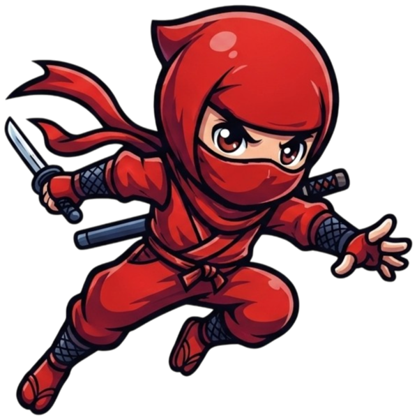

延續上一組的做法（粗黑描邊、高光、亮面圓徽、中文用粗黑體），換成三個不同的場景與氣氛。
夜祭的燈籠串、紅白條紋攤位、燈籠形狀的選單圖示，卡片頂端有紅白條紋。熱鬧、溫暖、有節慶感，紅色主角和燈籠的暖光很搭。

藍天、富士山、飄雪、白色雪地，按鈕是紅色和冰藍色的亮面膠囊，卡片上積了一點雪。明亮清爽，紅色主角在藍白底上非常醒目。
紙門格子牆、木樑、榻榻米、掛軸，按鈕是掛著紅色流蘇的木牌，選單圖示是小紙門。像回到忍者的秘密基地，溫馨有家的感覺。